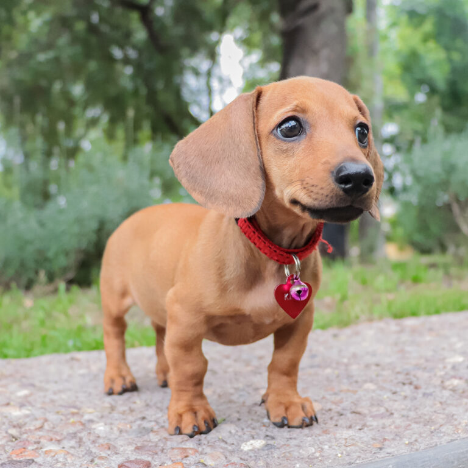

迷你犬(4公斤以下)

吉娃娃(Chihuahua)
原產地:墨西哥
身長(成犬): 約 15~23 公分
體重(成犬): 約 1~4 公斤
平均壽命: 15~18歲
個性:親人、適應力強
博美犬(Pomeranian)
德國(波美拉尼亞地區)
身長(成犬): 約 18~30 公分
體重(成犬): 約 1~3 公斤
平均壽命: 12~16歲
個性:活潑好動、充滿好奇心
約克夏(Yorkshire Terrier)
英國(約克郡)
身長(成犬): 約 22~24 公分
體重(成犬): 約 2~3 公斤
平均壽命: 12~15歲
個性:勇敢忠誠、有些固執
馬爾濟斯(Maltese)
馬爾他共合國(馬爾他島)
身長(成犬): 約 20~25 公分
體重(成犬): 約 1~3 公斤
平均壽命: 12~15歲
個性:溫馴乖巧、友善親人
小型犬(5~10公斤)
臘腸犬(Dachshund)
德國
身長(成犬):依品種(迷你型及標準型)有差距
體重(成犬): 約 4~10 公斤
平均壽命: 12~15歲
個性:聰明、溫和、小頑皮
迷你貴賓犬(Miniature Poodle)
德國、法國
身長(成犬):約 25~28 公分
體重(成犬): 約 6~10 公斤
平均壽命: 12~14歲
個性:活潑友善、智商極高、情緒感知敏銳
法國鬥牛犬(French Bulldog)
法國
身長(成犬):約 24~34 公分
體重(成犬): 約 8~10 公斤
平均壽命: 10~12歲
個性:黏主人、溫馴友好
比熊犬(Bichon Frisé)
原產地:西班牙
身長(成犬): 約 23~30 公分
體重(成犬): 約 5~9 公斤
平均壽命: 12~15歲
個性:親人、適應力強
西施犬(Shih Tzu)
原產地:中國
身長(成犬): 約 23~28 公分
體重(成犬): 約 4~7 公斤
平均壽命: 10~16歲
個性:性格友好、溫順、個性獨立
迷你雪納瑞(Miniature Schnauzer)
原產地:德國
身長(成犬): 約 30~36 公分
體重(成犬): 約 5~9 公斤
平均壽命: 12~15歲
個性:聰明、忠心、天性友善

狐狸犬(Japanese Spitz)
原產地:日本
身長(成犬): 約 30~36 公分
體重(成犬): 約 6~10 公斤
平均壽命: 12~15歲
個性:敏感、愛好自由
西高地白梗(West Highland White Terrier)
原產地:英國(蘇格蘭)
身長(成犬): 約 26~28 公分
體重(成犬): 約 7~9 公斤
平均壽命: 12~15歲
個性:活潑好動、自主意識
中型犬(11~25公斤)

柴犬(Shiba Inu)
原產地:日本
身長(成犬): 約 35~41 公分
體重(成犬): 約 7~10 公斤
平均壽命: 12~15歲
個性:獨立、固執、警戒心強
柯基(Welsh Corgi)
原產地:英國(威爾斯)
身長(成犬): 約 25~30 公分
體重(成犬): 約 11~14 公斤
平均壽命: 12~15歲
個性:聰明、忠誠、友善
大型犬(超過25公斤)

拉不拉多(Labrador Retriever)
原產地:英國
身長(成犬): 約 54~57 公分
體重(成犬): 約 25~34 公斤
平均壽命: 10~12歲
個性:溫馴、聰明、服從性高
黃金獵犬(Golden Retriever)
原產地:英國(蘇格蘭)
身長(成犬): 約 54~61 公分
體重(成犬): 約 25~34 公斤
平均壽命: 10~13歲
個性:親人、不具攻擊性
哈士奇(Siberian Husky)
原產地:俄羅斯(西伯利亞)
身長(成犬): 約 50~60 公分
體重(成犬): 約 16~27 公斤
平均壽命: 10~15歲
個性:聰明、自我意識高